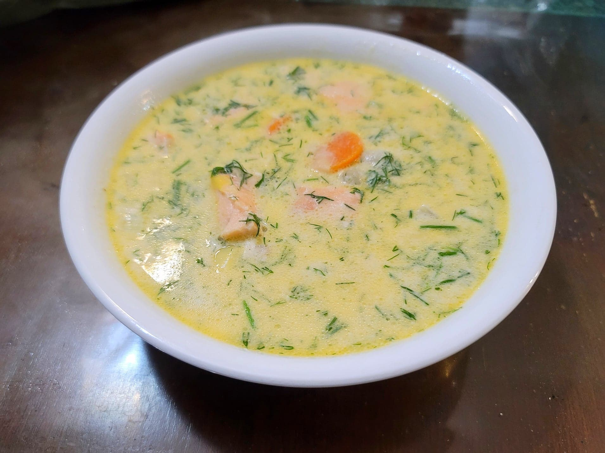

Lohikeitto

Ingredients:
- 1 lb Salmon fillet, cubed
- 4 tbsp Butter
- 1 Leek, halved and sliced
- 4-5 cups Fish broth or Water
- 1 lb Potatoes, peeled and cubed
- 1 large Carrot, peeled and sliced
- 1 cup Heavy cream
- Salt, to taste
- Black pepper, to taste
- 1 cup (10 g) Dill, chopped, or to taste
Instructions:
- Add the butter to a large saucepan over medium heat. Add in the leek and sauté until soft, about 5-7 minutes.
- Then add in the broth, potatoes, and carrot. Bring to a boil and let cook for 10-15 minutes, or until the potatoes are fork tender.
- Add in the salmon and heavy cream. Bring to a simmer and then reduce to low. Let cook for about 5 minutes or until the salmon is completely cooked.
- Add salt and pepper to taste. Remove from the heat and stir in the dill. Serve immediately.